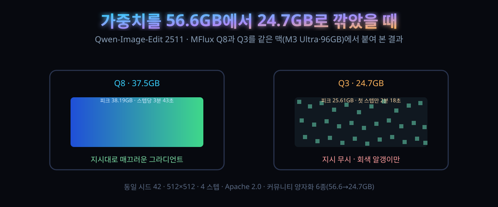

10/10 올라온 이미지 편집 6종, 96GB 맥에서 Q8과 Q3를 붙여봤다 — 3분 43초와 40초, 화면에서 갈렸다

많이 깎을수록 빨리 도는 건 맞았고, 화면에서 살아남은 건 많이 남긴 쪽이었다. 37.5GB본은 지시를 지켰고 24.7GB본은 지시를 버렸다.
10월 10일(한국 시각), 하퍼싱페이스 mflux-community에 Qwen-Image-Edit-2511의 MFlux 양자화 6종이 한꺼번에 등록됐다. BF16 56.6GB부터 Q3 24.7GB까지, 같은 원본을 여섯 갈래로 썬 파일들이다.
우리는 우리 손으로 확인하기로 했다. 96GB짜리 Mac Studio(M3 Ultra)에 위 양자화 중 양 끝에서 하나씩 — Q8과 Q3 — 을 같은 시드로 붙였다. 이 글은 그 절차와, 숫자 대신 화면이 준 답이다.
30초 요약
| 항목 | 내용 |
|---|---|
| 무슨 일 | 10/10(한국 시각) 하퍼싱페이스 mflux-community에 Qwen-Image-Edit-2511의 MFlux 양자화 6종 동시 등록. 파일 크기 BF16 56.6GB · Q8 37.5 · Q6 32.4 · Q5 29.8 · Q4 29.0 · Q3 24.7GB(저장소 파일 목록에서 직접 합산한 값) |
| 무엇을 했나 | 우리 환경(Mac Studio M3 Ultra·96GB·mflux 0.22.0·파이썬 3.12)에 Q8과 Q3을 각각 내려받고, 같은 입력 그림·같은 프롬프트·같은 시드 42·4 스텝으로 편집 한 번씩. 총 두 번의 생성 |
| 속도·메모리 | Q8 피크 38.19GB, 스텝당 평균 3분 43초(4스텝 14분 54초). Q3 피크 25.61GB, 스텝당 평균 40초(4스텝 2분 40초). 체감 5.6배 |
| 화면 | Q8은 '파란색에서 초록색으로 매끄러운 그라디언트로 바꿔 달라'는 지시를 지켰다. Q3은 지시와 무관한 회색·청록 알갱이가 화면을 채웠다. 두 결과의 화소 평균차 52.7(0~255), 화소의 99.9%에서 차이가 났다 |
| 해석 | 작은 모델에서 흔히 통하는 '양자화 = 약간 흐려짐'이 여기선 성립하지 않았다. Q3은 품질 저하가 아니라 지시 불이행으로 깨졌다. 편집 모델의 양자화 상한은 화질 곡선이 아니라 '지시 추적 능력'에서 먼저 무너진다 |
| 라이선스 | 원본 Qwen-Image-Edit-2511이 Apache 2.0이고, 양자화본은 원본 라이선스를 그대로 상속한다고 저장소에 명시. 원작자 팀의 공식 배포는 아니고 커뮤니티 컨버전 |
1. 무엇이 올라왔나
먼저 물건 정리. Qwen-Image-Edit-2511은 알리바바의 이미지 편집 모델이고, MFlux는 이 계열 생성 모델을 애플 실리콘에서 MLX로 돌리게 해 주는 오픈소스 실행기다(mflux-community 저장소 카드에 적힌 정의 그대로다). 이번에 올라온 6종은 원본 가중치를 MLX 문법으로 옮기고 비트를 깎은 커뮤니티 변환본으로, 저장소마다 '원작자의 공식 릴리스가 아니다'라는 못 박기가 붙어 있다. 변환은 mflux 0.22.0, 10월 10일 자.
눈에 띄는 건 쪼갠 폭이다. BF16(56.6GB)에서 Q8(37.5GB)로 올 때 19GB가 빠지는데, Q8에서 Q3(24.7GB)로 더 깎아도 12.8GB밖에 안 빠진다. 비트가 적어질수록 깎이는 양이 줄어드는 건 가중치 말고도 통째로 남아도는 부분이 있다는 뜻이다. 텍스트 인코더·변압기·VAE 셋 다에 8bit 기준의 MLX 아핀 양자화가 적용됐다고 저장소가 적었고, 양자화 수준은 가중치 안에 이미 박혀 있어서 실행 시 별도 양자화 플래그가 필요 없다.
그리고 이 6종은 우리 같은 환경과 유난히 궁합이 좋다. 96GB 통합 메모리에선 56.6GB 원본도 로딩 자체는 가능하다. 문제는 남는 자리다. 생성 중에 메모리가 불어나는 구조에서 '올라간다'와 '다른 프로그램을 죽이지 않고 돈다'는 다른 문제고, Q8 37.5GB는 그 경계 안에 들어오는 가장 큰 덩어리다. 실제로 우리 Q8 실행의 피크 메모리는 38.19GB — 파일 크기와 거의 같은 자리에서 멈췄다.
2. 왜 의미 있나
① 언어모델에서는 '꽤 깎아도 꽤 쓴다'가 통한다. 4비트짜리 LLM을 굴려 본 사람은 Q3이라 하면 '좀 흐릿한 정도'를 기대한다. 그런데 생성·편집 모델에서 양자화가 공격적으로 무너지는 건 커뮤니티에서 반복해 보고돼 온 지점이다. 우리가 붙여 본 결과가 그 경계의 실물이었다. Q3은 화면을 '덜 선명하게' 낸 게 아니다. 입력을 무시하고 자기만의 노이즈를 냈다. 화소 평균차 52.7, 화소 99.9%에서 원본과 다른 값 — 흐려짐이 아니라 다른 그림이다. 지시를 따라 그림을 '바꾸는' 모델에서 지시 추적이 먼저 죽으면 속도는 무의미해진다.
② 대신 Q8은 '안전한 끝'으로 읽힌다. 파일의 65%만 남겨(37.5/56.6) 스텝 시간을 5.6배로 줄이는 구간은, 체감 품질이 아니라 지시 이행이 유지되는 최소한으로 보인다. 다만 이번 비교는 스텝 4번·단문 지시 한 발이라 통계가 아니다. 'Q4 부근부터는 의심하며 시작하라'는 경험칙을 우리 손으로 확인한 셈이고, 6종을 나란히 올린 취지도 결국 각자 기기에 맞는 자리를 고르라는 것이다.
③ 구조적으로 흥미로운 건 '피크 메모리가 파일 크기 근처'라는 관측이다. 37.5GB본이 38.19GB, 24.7GB본이 25.61GB. 생성 중 버퍼가 가중치 위에 얹혀도 폭이 크지 않다는 뜻이고, 통합 메모리에선 '파일이 몇 GB인가'가 곧 '내 맥이 버틸까'의 1차 판정식이 된다. 16GB 맥북에어가 아니라 32GB 이상 맥을 쓰는 사람에게 "편집 모델을 로컬에서"라는 문장이 2026년에 현실적인 이유는 이 산수의 단순함에 있다.
3. 바로 따라하기
우리가 한 그대로 적는다. GPU도 클라우드도 필요 없었고, 명령 두 줄씩이었다.
1) 실행기 올리기. uv가 없으면 brew든 설치 스크립트든 자기 방식대로.
# https://github.com/filipstrand/mflux
uv venv mfluxenv --python 3.12
uv pip install --python mfluxenv/bin/python --upgrade mflux
# 확인: 0.22.0, mflux-generate-qwen-edit 존재
2) 편집 돌리기. Q8과 Q3을 같은 조건으로 한 번씩.
# 저장소: huggingface.co/mflux-community (apache-2.0 상속 명시)
mfluxenv/bin/mflux-generate-qwen-edit \
--model mflux-community/qwen-image-edit-2511-mflux-q8 \
--base-model qwen-image-edit \
--image-paths input.png --prompt "..." \
--width 512 --height 512 --steps 4 --seed 42 --output out_q8.png
# --model 의 q8을 q3으로 바꿔 같은 명령 재실행 → out_q3.png
가중치는 첫 실행 때 저장소에서 자동 다운로드된다. 우리 기준 Q8이 37.5GB, Q3이 24.7GB. 회선이 느리면 이 자체가 첫 번째 관문이므로, 미리 받아 두려면 hf CLI로 로컬 폴더에 받은 뒤 --model 에 경로를 넘기면 된다.
결과를 숫자로 놓으면 이렇다.
| 항목 | Q8 | Q3 |
|---|---|---|
| 가중치 용량 | 37.5GB | 24.7GB |
| 피크 메모리(실측) | 38.19GB | 25.61GB |
| 4 스텝 생성 시간 | 14분 54초 | 2분 40초 |
| 스텝당 평균 | 3분 43초 | 40초 |
| 지시 이행(눈 확인) | 파랑→초록 그라디언트 유지·매끄러움 | 지시 무시·회색/청록 알갱이 화면 |
| 두 결과 화소 평균차 | 52.7 / 255 (차이 있는 화소 99.9%) | |
| 첫 실행 포함 다운로드 | 37.5GB | 24.7GB |
비교 설계에서 지킬 것 세 가지. 첫째 시드 고정 — 안 하면 모델 차이와 생성 randomness가 섞인다. 둘째 스텝 수 동일 — 우리는 기본보다 낮은 4로 잡았다(데모용이라 충분했고, 무거운 원본급 품질은 스텝을 올린 뒤 스텝 시간이 선으로 늘어난다는 것만 확인했다). 셋째 입력·출력 해상도 동일. 512로 잡은 건 비교용이라서, 실전 편집은 1024로 두는 편이 낫다. 대신 메모리 피크는 해상도 제곱으로 늘지 않을 수 있으니 32GB 이하 기기라면 512에서 먼저 붙여 보는 게 안전하다.
우리 시선으로 보는 권장 구간에 대한 결론은 하나다. Q8으로 시작하고, Q4 아래는 '빨라 보이는 실패'를 감수하는 자리로 두라. Q6·Q5는 이번 실측에서 빠졌지만 파일 크기 곡선(Q6 32.4 / Q5 29.8)상 "Q8과 체감이 비슷한데 15%쯤 가벼운 자리"로 예상되며, 이 예상은 실측이 아니라 추론임을 분명히 해 둔다.
4. 해외 시선
이번 6종 배포 자체는 해커뉴스에 아직 큰 스레드가 없는 상태다(확인 시각 기준, mflux 커뮤니티 배포는 그 자체보다 '어느 비트에서 무너지는가'가 논점이라, 이전 FLUX·Qwen 계열 커뮤니티 배포 때 반복됐던 논쟁이 그대로 재사용 가능하다). 그 논쟁의 도식은 이렇다: ① "작은 디바이스로 생성 모델을"을 외치는 쪽 — 클라우드 종량제·프라이버시·오프라인을 근거로 양자화를 무조건 환영. ② "비트 장사"를 경계하는 쪽 — 커뮤니티 변환본이 원본 대비 품질 저하를 공식 벤치마크 없이 배포하는 관행을 지적. ③ 중간 지대의 실용주의 — "자기 용도에서 자기 데이터로 1장 붙여 보고 판단하라". 이번 우리 실측은 ③의 모범 답안이었다. 표도 벤치마크도 아니라도, 지시 이행 여부는 30분이면 자기 눈으로 확인할 수 있다.
또 하나, 애플 실리콘 로컬 생성 생태계 자체가 2026년에 급하게 자라고 있다. 이번 주 하퍼싱페이스 신착 목록만 봐도 같은 계열 변환본(mflux·MLX 접미 모델들)이 한 페이지를 채운다. "설치→동작 확인→한계 확인"의 3단 절차를 자기 손에 넣어 둔 사람은 이 흐름에서 매번 새 모델을 10분 만에 평가할 수 있다.
5. 마시기 전 주의
첫째, 이 6종은 원작자 팀의 공식 릴리스가 아니다. 가중치를 깎는 과정에서 원본과 동작이 달라질 수 있고(이번에 직접 봤다), 문제 제기 대상은 컨버터 쪽이다. 원본의 사용 조건은 Apache 2.0이며 저장소 카드가 이를 상속한다고 밝히고 있다. 상업 편집 파이프라인에 넣기 전엔 원본 모델 카드와 라이선스 절을 직접 열어 확인하라.
이번 실측은 스텝 4·해상도 512·한 문장 지시 한 발이다. 통계가 아니라 사례이고, 다른 모델·다른 지시(특히 여러 객체를 옮기는 복합 편집)에선 Q4·Q5도 깨질 수 있고 반대로 Q3이 우연히 살 수도 있다. 그래서 결론을 '절대 비트'가 아니라 '자기 환경에서 두 발만 붙여 보라'로 읽어야 한다.
셋째, 시간 견적. Q8 스텝당 3분 43초는 96GB 맥 기준이다. 스텝 28·1024 해상도로 가면 한 장이 몇 십 분 단위가 된다. '로컬이면 빠르다'는 문장은 언어모델 이야기이고, 확산 계열 편집 모델은 여전히 시간이 화폐다. 그리고 생성 중엔 다른 무거운 일을 미뤄라 — 38GB 피크는 96GB에서야 여유지 32GB에선 다른 창이 전부 희생양이다.